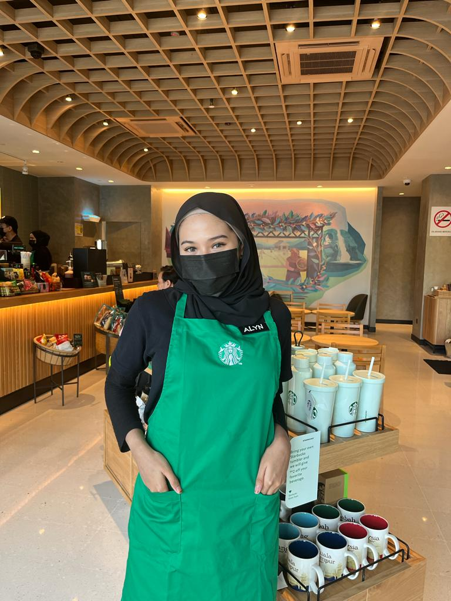
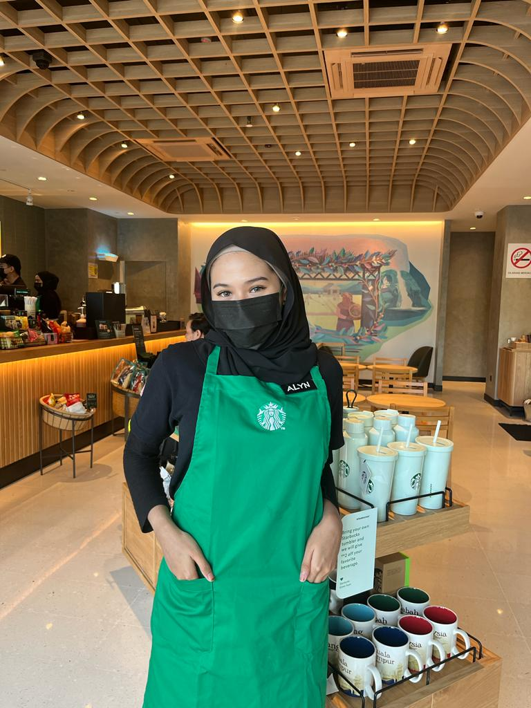

E X P E R I E N C E S
MY 2022 JOURNEY
Since it's a New Year, why not I want share with you guys what I have been through in 2022
A Part-Time Service Crew
Kyochon Restaurant, Pavillion Bukit Bintang, Kuala Lumpur
I decide to work as a part time in food and beverage restaurant because it was on my semester break. The food restaurant which is Kyochon, is a well-known because of their fresh juicy fried chicken and originally recipe from Korean. It is always be the favourite choice among the people who likes to eat Korean food. I had gained a wonderful challenging experience of running as Service Crew in food and beverage and also gained a knowledge.

August 2022
A Part-Time Barista
Starbucks Troika Kota Bharu, Kelantan
Because I don't have anything to do during the other semester break, I have applied my second fnb restaurant which is mainly serving a drink that based on high quality coffee.
19 November 2022
SPR Vote Day Volunteer
Pusat Pengundian SMK Hamzah, Machang
Be the volunteer on the Vote Day has give me many experiences so that I can help people how to vote and others. It also gives me an opportunity to met a variety of people, races, religions and ages.
March-November 2022
Online Entrepreneurship
Salju Beauty Skincare
I have sell this skincare set which that can treat all skin's problem. I am so happy because I had received many good feedbacks from users so that I strongly believe that it really works and worth to buy.
March-November 2022
Dean List Awards
Got 3.61 on Semester 3
I am so proud of me because I got the awards which I know how much I had struggled for it. It is quite hard for me on that semester but I really grateful that I already did all my best.
Kyochon Restaurant, Pavillion Bukit Bintang, Kuala Lumpur
I decide to work as a part time in food and beverage restaurant because it was on my semester break. The food restaurant which is Kyochon, is a well-known because of their fresh juicy fried chicken and originally recipe from Korean. It is always be the favourite choice among the people who likes to eat Korean food. I had gained a wonderful challenging experience of running as Service Crew in food and beverage and also gained a knowledge.

A Part-Time Barista
Starbucks Troika Kota Bharu, Kelantan
Because I don't have anything to do during the other semester break, I have applied my second fnb restaurant which is mainly serving a drink that based on high quality coffee.
SPR Vote Day Volunteer
Pusat Pengundian SMK Hamzah, Machang
Be the volunteer on the Vote Day has give me many experiences so that I can help people how to vote and others. It also gives me an opportunity to met a variety of people, races, religions and ages.
Online Entrepreneurship
Salju Beauty Skincare
I have sell this skincare set which that can treat all skin's problem. I am so happy because I had received many good feedbacks from users so that I strongly believe that it really works and worth to buy.
Dean List Awards
Got 3.61 on Semester 3
I am so proud of me because I got the awards which I know how much I had struggled for it. It is quite hard for me on that semester but I really grateful that I already did all my best.